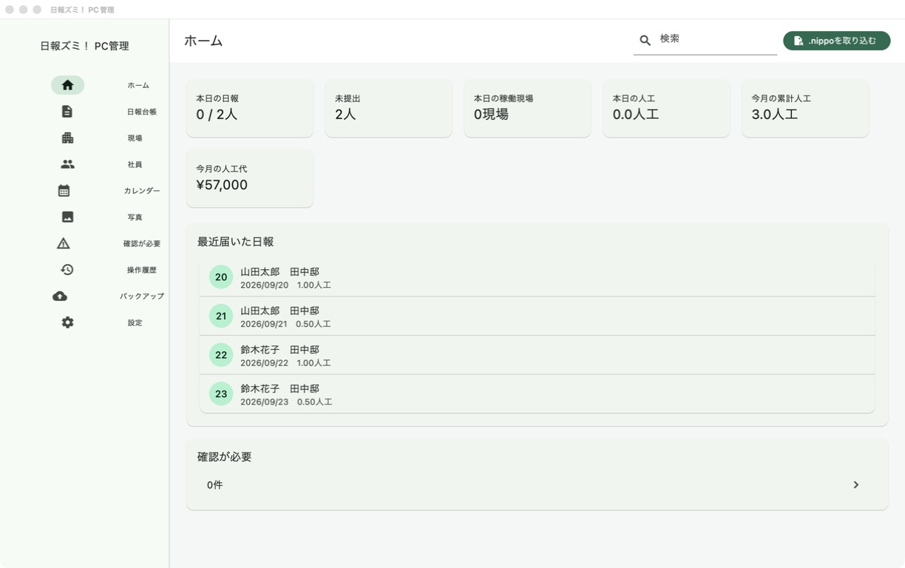
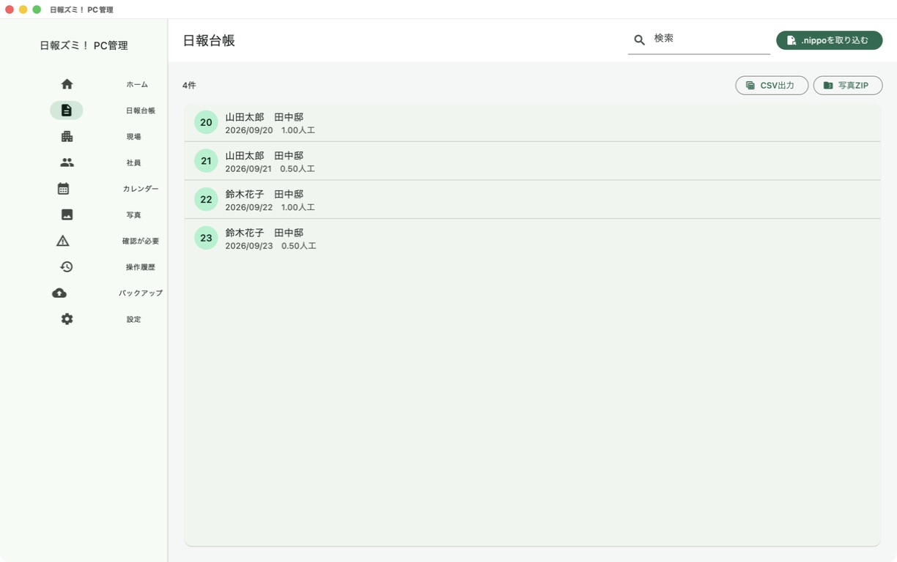
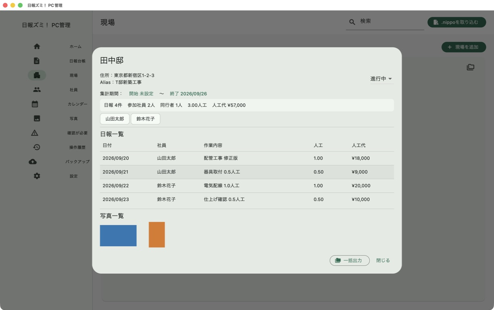
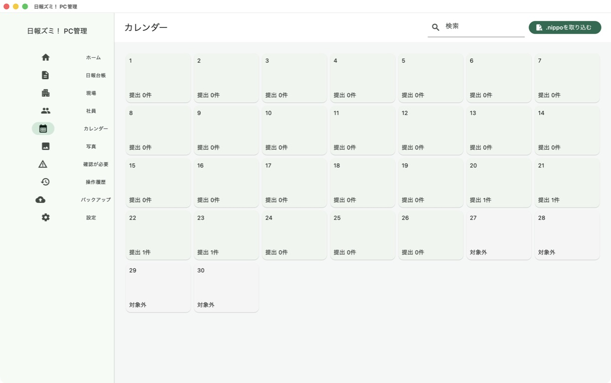

会社側の日報管理をまとめます
PC版は、スマートフォン版で作成された .nippo ファイルを取り込み、日報台帳や現場別の集計に利用します。PCで新しい日報を書く機能ではありません。
主な機能
.nippo取込
スマートフォンから受け取った日報データを取り込み、重複や修正版を判定します。
日報台帳・詳細
受信日報を一覧で確認し、作業内容、時間、同行者、写真を参照します。
現場・Alias
現場名の別表記を同じ現場へ紐付け、現場別の履歴と集計を確認します。
社員・外部応援
自社社員、外部応援者、応援会社、所属と利用状態を安全に管理します。
人工・人工代
適用単価のスナップショットを保持し、現場・会社・人物・期間別に集計します。
提出状況・休日
提出済み・未提出を、社員状態、日本の祝日、会社休日を考慮して確認します。
月間カレンダー
日曜始まりの月間表示から、日別の提出社員、現場、日報、人工を確認します。
写真・グローバル検索
写真から元の日報へ移動し、現場・Alias・住所・人物・会社・日報を横断検索します。
各種出力
写真をクロップせず、日報PDF、台帳CSV、写真ZIP、現場＋期間の一括フォルダを出力します。
確認が必要
現場や人物の紐付けなど、管理者の確認が必要な項目をまとめて表示します。
操作履歴
取込、紐付け、状態変更、バックアップ、復元などの主要操作を記録します。
バックアップ・復元
管理データと写真を1つの形式に保存し、検証してから安全に復元します。
日報を受け取る流れ
- スマートフォンの「日報ズミ！」で日報を完成させます。
- 会社PC用の
.nippoファイルを共有します。 - 会社側で受け取ったファイルをPCに保存します。
- PC管理の「.nippoを取り込む」からファイルを選びます。
- 内容を確認して取り込みます。同じ日報の修正版は更新候補として扱われます。
取り込みは利用者が選んだファイルに対して行います。クラウドからの自動取得ではありません。
バックアップと別パソコンへの移行
.nippo-manager-backup には、日報、設定、マスター、監査情報と管理領域内の写真を含めます。復元時は形式と写真のサイズ・SHA-256を検証し、安全バックアップを作ってから置き換えます。
MacからWindows、WindowsからMacへ移す場合も、元のPCでバックアップを書き出し、新しいPCで復元します。バックアップファイルには業務情報や写真が含まれるため、利用者自身で安全に保管してください。
画面例




取扱説明書・ダウンロード
Mac版はDeveloper ID署名とApple公証を完了した正式版を公開しています。Windows版は公開準備中です。